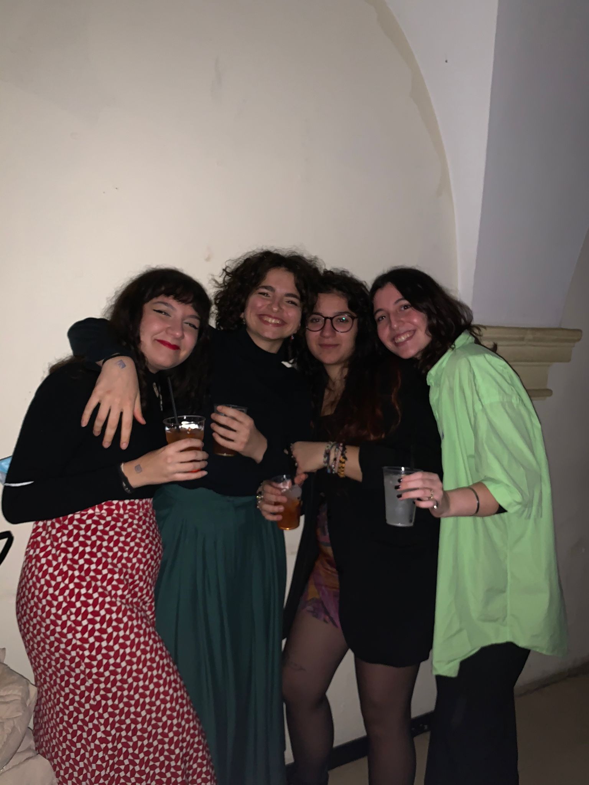

Impossibile, per me, parlare dei locali a Bologna e non citare il Cortile.
È stato il primo posto in cui sono stata appena mi sono trasferita: con le mie nuovissime compagne di università siamo andate a sentire una serata di karaoke con musica live. Dopo due anni di pandemia e restrizioni è stato il primo passo verso la normalità e l’ingresso in questa mia nuova vita qui.
Ci sono estremamente affezionata e il fatto che sia così piccolo lo rende accogliente e familiare dai primi cinque minuti. Assolutamente un must e un rito di passaggio per chiunque si trasferisca in questa incredibile città.
Purtroppo ora la maggior parte delle serate sono a pagamento quindi lo frequento molto meno; la jam del martedì, però, rimane il baluardo di gratuità e di buona musica dal vivo che non mi sento mai di sconsigliare.
Hei tu! Grazie di avermi dedicato il tuo tempo e aver letto fino alla fine! Se ti andasse mi farebbe piacere sapere cosa ne pensi, puoi scrivermi su Instagram @posticarinii o via mail posticarinii@gmail.com . Buona giornata :)